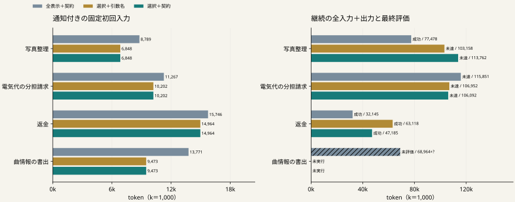

仕様が手元に残っていても、AIが正しく使えるとは限らない。
P45の選択表示は採用見送り。
P46では７拒否中４件・３課題に
既公開契約を返せると照合した。
同じ詳しい返信規則の下で
表示を減らすことは有効か。
引数名だけの返信でも足りるか。
| 条件 | 境界での表示 | 未知引数の拒否時 |
|---|---|---|
| 全表示＋契約 | 全表示 | 公開済みの原契約 |
| 選択＋引数名 | 由来を照合した仕様部分を省略 | 許される引数名 |
| 選択＋契約 | 上と同じ省略 | 公開済みの原契約 |
４既知課題・８応答後の同じ環境とPython状態。各１回、計12件。
16生成／120,000 token／480秒。元のAPI枠、通知・出力枠も共通。

左右の横軸の範囲は異なる。右は失敗も含む全継続費用。斜線と＋?は既知分に加わる不明使用量。
| 課題 | 全表示＋契約 | 選択＋引数名 | 選択＋契約 |
|---|---|---|---|
| 写真整理 | 成功 / 77,478 token AI 6 / API 94 | 未達 / 103,158 token AI 9 / API 90 | 未達 / 113,762 token AI 10 / API 50 |
| 電気代の分担請求 | 未達 / 115,851 token AI 9 / API 8 | 未達 / 106,952 token AI 9 / API 8 | 未達 / 106,092 token AI 9 / API 8 |
| 返金 | 成功 / 32,145 token AI 2 / API 2 | 成功 / 63,118 token AI 4 / API 3 | 成功 / 47,185 token AI 3 / API 2 |
| 曲情報の書出 | 未評価 / 68,964 ＋不明 token AI 5 / API 60 | 未実行 / — token AI 0 / API 0 | 未実行 / — token AI 0 / API 0 |
| 条件 | 付加件数 | 次入力に存在／次生成あり | 付加文字数 | 構成秒 |
|---|---|---|---|---|
| 全表示＋契約 | 1 | 1 / 1 | 497 | 0.0029 |
| 選択＋引数名 | 3 | 3 / 3 | 1271 | 0.0013 |
| 選択＋契約 | 2 | 2 / 2 | 1616 | 0.0009 |
全プログラム開始時の公開範囲、RPC要求、返却を再構成。
元の契約を変えていないか、送信済み要求へ付加していないかを確認。
写真の「選択＋契約」は対象拒否がなく付加０件。返信適用の有無も区別する。
| 費用の区間 | 全表示＋契約 | 選択＋引数名 | 選択＋契約 |
|---|---|---|---|
| 試行／評価した条件数 | 4 / 3 | 3 / 3 | 3 / 3 |
| 共通前半の既知token | 210,380 | 144,520 | 144,520 |
| 継続の既知token | 294,438 ＋不明1 | 273,228 | 267,039 |
| 前半＋継続の論理全仕事 | 504,818 ＋不明1 | 417,748 | 411,559 |
| 継続の経過秒 | 1245.60 | 807.23 | 880.24 |
| 表示・返信・入力計数の秒 | 0.880 | 0.876 | 0.883 |
| 実験用復元 API／秒 | 51 / 8.89 | 33 / 6.65 | 33 / 6.65 |
共有サーバー：ロード 10.07秒、全稼働 3072.10秒。各条件への重複加算はしない。
全12件の評価と既知使用量がそろわず、
事前の採用条件に届かない。
| 選択＋契約の比較相手 | ４課題の成功喪失 | ４課題の継続token差 |
|---|---|---|
| 全表示＋契約 | 未判定 | 未判定 |
| 選択＋引数名 | 未判定 | 未判定 |
評価済みの写真は選択２条件で未達。返金の選択＋契約は、
成功した全表示＋契約より15,040 token多い。
４既知課題・１seed。成功件数の一致だけでは通過させない。
12保留シナリオは未閲覧。複数担当の通信削減と方式の新規性は未確立。